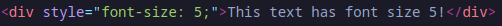
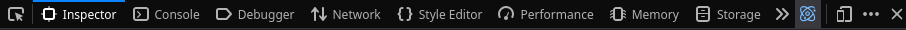

HTML, oftewel HyperText Markup Language is een soort script
die bepaalt wat de inhoud en structuur van een website is.
Het bestaat uit tags en elementen. Een tag
geeft de stijl of functie van iets aan, terwijl een element
juist een benoemde onderdeel van de HTML bestand is, zoals een sectie.
Bijvoorbeeld: om tekst dikgedrukt te maken moet het
geplaatst worden tussen de "<strong>" tags. Als tags geopend worden
moeten ze ook gesloten worden, met "</strong>" tag, in ons geval.
Additionele eigenschappen kunnen toegevoegd worden aan de tags, bijvoorbeeld:

Deze pagina heeft hele makkelijke HTML en een verstopte vlag!
Je kunt het inspecteren via de Web Developer Tools, die je kunt kiezen
uit de applicatie menu van je browser.
Meestal is het te vinden op:
applicatie menu -> tools -> web developer tools
maar je kunt er meestal ook bij door op F12 te drukken!
Vanaf hier kies je de Inspector tool om de HTML te bekijken.

Je kunt anders ook "view-source:" vooraan de URL schrijven.
Om meer te leren over HTML, lees dan verder
hier.
Veel plezier met de vlaggen jacht!
zcc{in53ct_f0nt_5iz3}